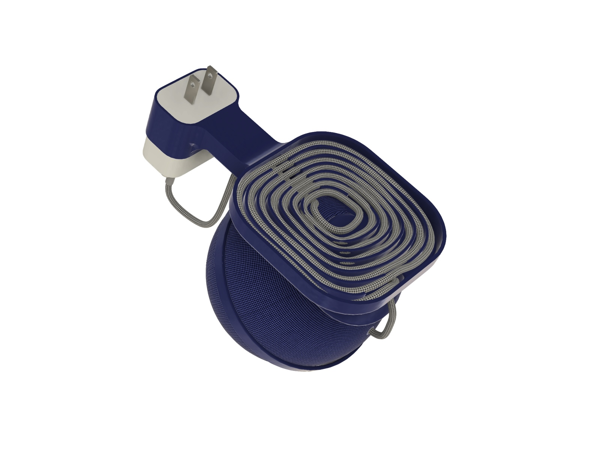
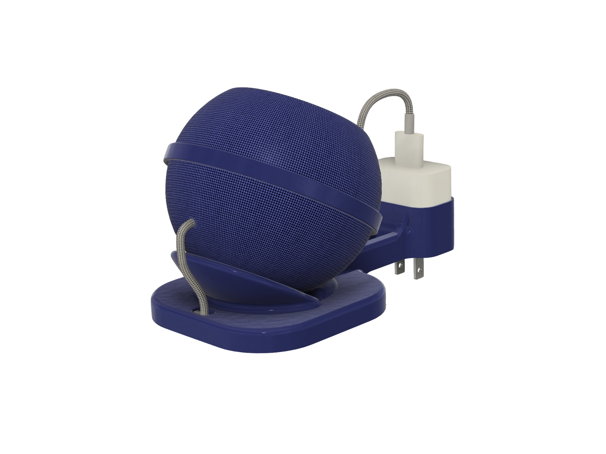
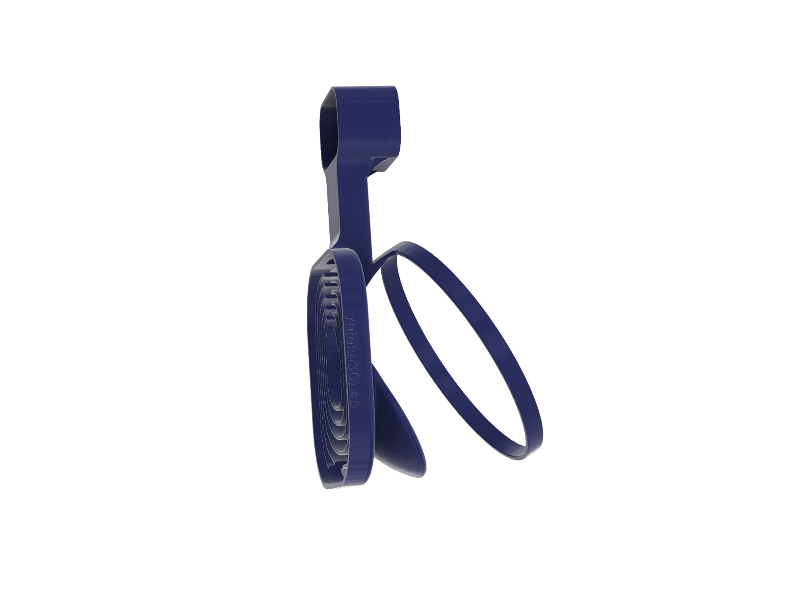
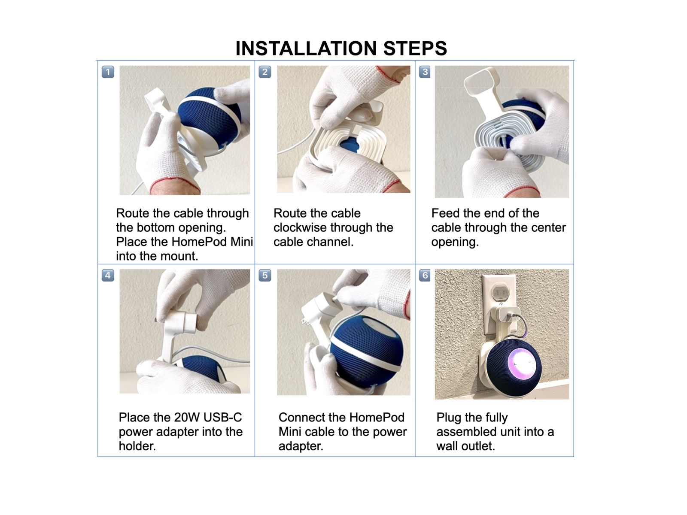
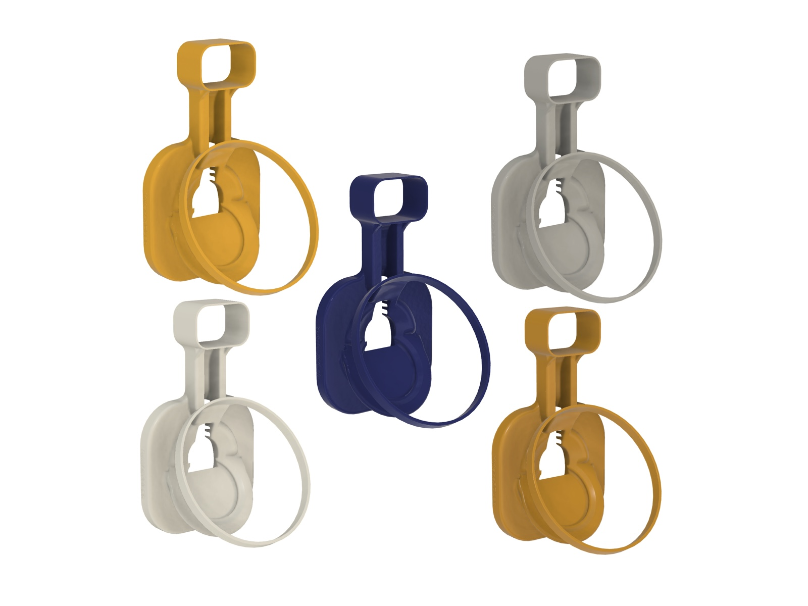
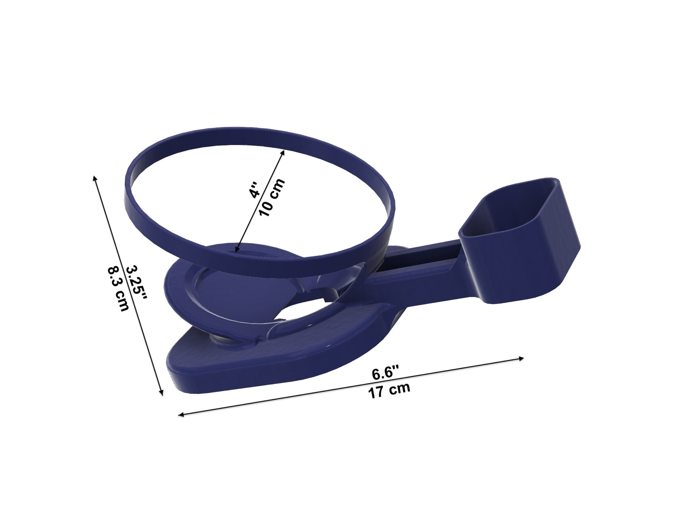
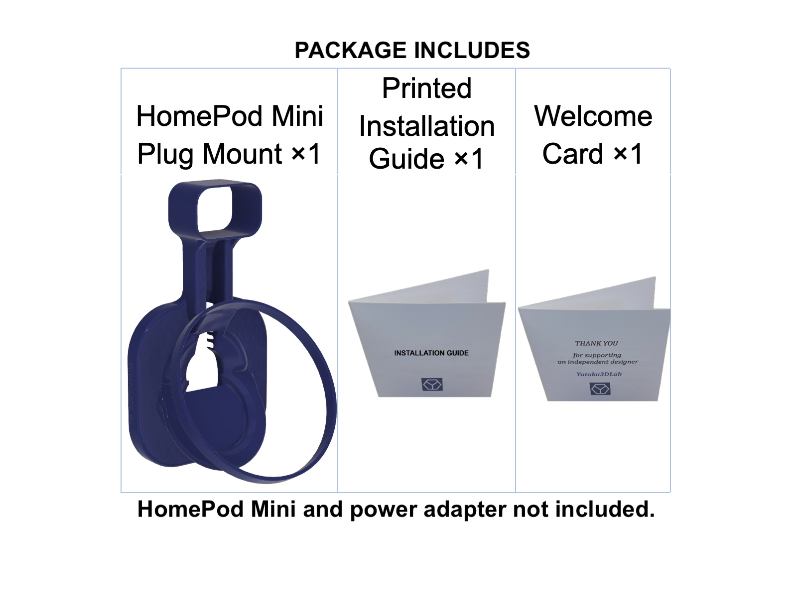

No drilling
Assemble the mount, HomePod Mini, cable and adapter, then plug the complete unit into a standard US wall outlet.

HomePod
No drilling · Built-in cable management · Compact outlet setup
Keep your HomePod Mini directly at the wall outlet while the integrated cable channel organizes excess cable and the built-in holder supports the compatible 20W USB-C power adapter.
HomePod Mini and power adapter are not included.
Assemble the mount, HomePod Mini, cable and adapter, then plug the complete unit into a standard US wall outlet.
A spiral channel stores excess HomePod Mini cable inside the mount for a compact installation.
The HomePod Mini cradle, cable channel and compatible 20W adapter holder are integrated into one design.
Product overview
A quick look at the mount, cable routing and finished outlet installation.
Designed around the cable



Installation
Route the cable, place the adapter and plug the assembled unit into the outlet.

Choose your color
White, Blue, Yellow, Orange and Gray. Colors are intended to coordinate with HomePod Mini finishes but may not be an exact match.

Specifications
Approximate mount dimensions are 6.6 × 4 × 3.25 in (17 × 10 × 8.3 cm).

Physical package
The physical product includes the mount plus printed instructions and Yutaka3DLab Welcome Card.

Choose your format
Buy the finished mount or download the design for your own 3D printer.
Ready to use
3D printed, inspected and shipped with a printed Installation Guide and Welcome Card.
For makers
Download the model from your preferred Yutaka3DLab marketplace.
Questions or support?
Use the printed guide, the full installation video above, or contact Yutaka3DLab.
Apple and HomePod are trademarks of Apple Inc. Yutaka3DLab is an independent designer and is not affiliated with or endorsed by Apple. This product is designed for standard US wall outlets and the compatible US-version power adapter listed above.